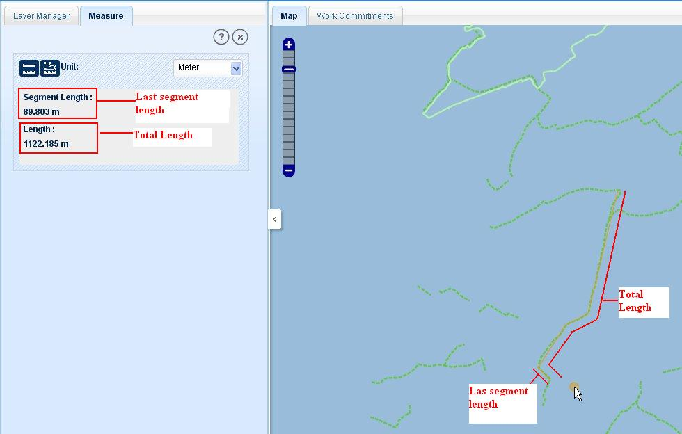

Measure functionality allows users to measure a desired length or area. Click on Measure tool, application will show a new tab on left panel as ‘Measure’.
It has two tools one for measuring length and other to measure area. By default measure length tool is active.
Click on ‘Length’ tool and select required unit form drop down list.
Draw a line as required for measuring the length (double click to complete the line).
User can create more than one segment in a line to measure a length of line with multiple Vertices.
As user draws first segment the segment length and length will be same but on drawing second segment, application will show the current segment’s length as ‘Segment Length’ and total length of the line will be shown as ‘Length’.

Fig.1 Measure Length
Click on Measure area tool, and select the required unit form drop down list.
Draw a required polygon on map to measure area.
Double click to finish the polygon.
As user draws more than two nodes of polygon, application starts to show the area of polygon and changes the measured area on adding one more node and continues to do so, on adding nodes until user double clicks to complete the polygon.